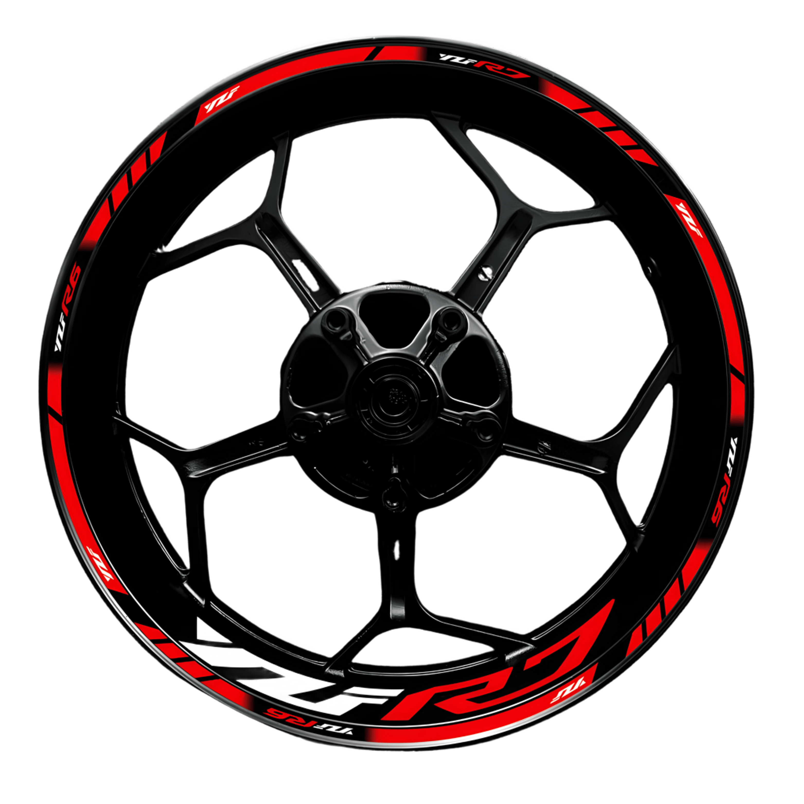
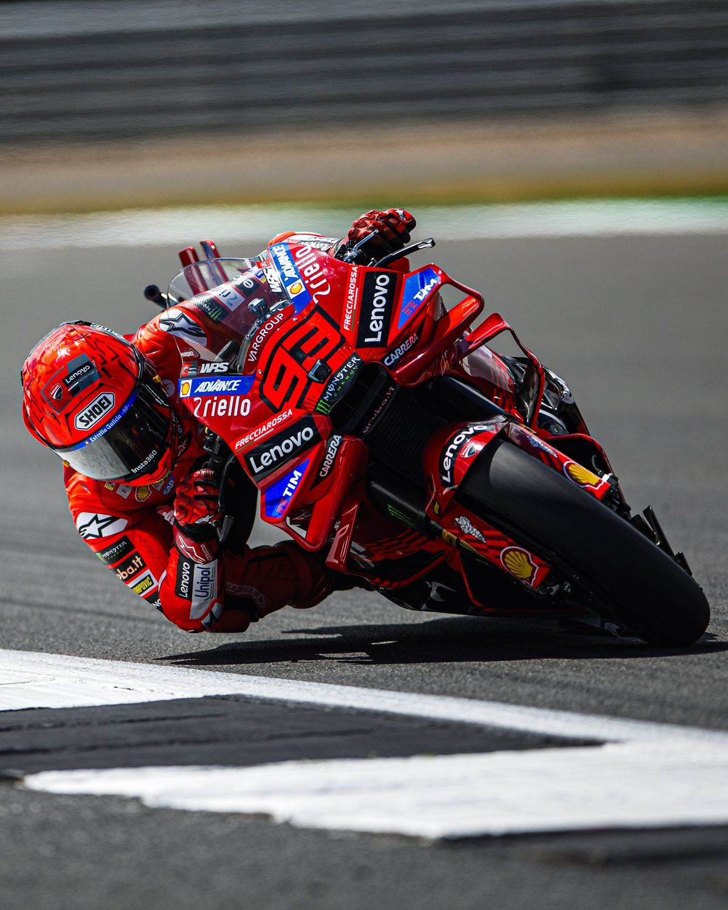
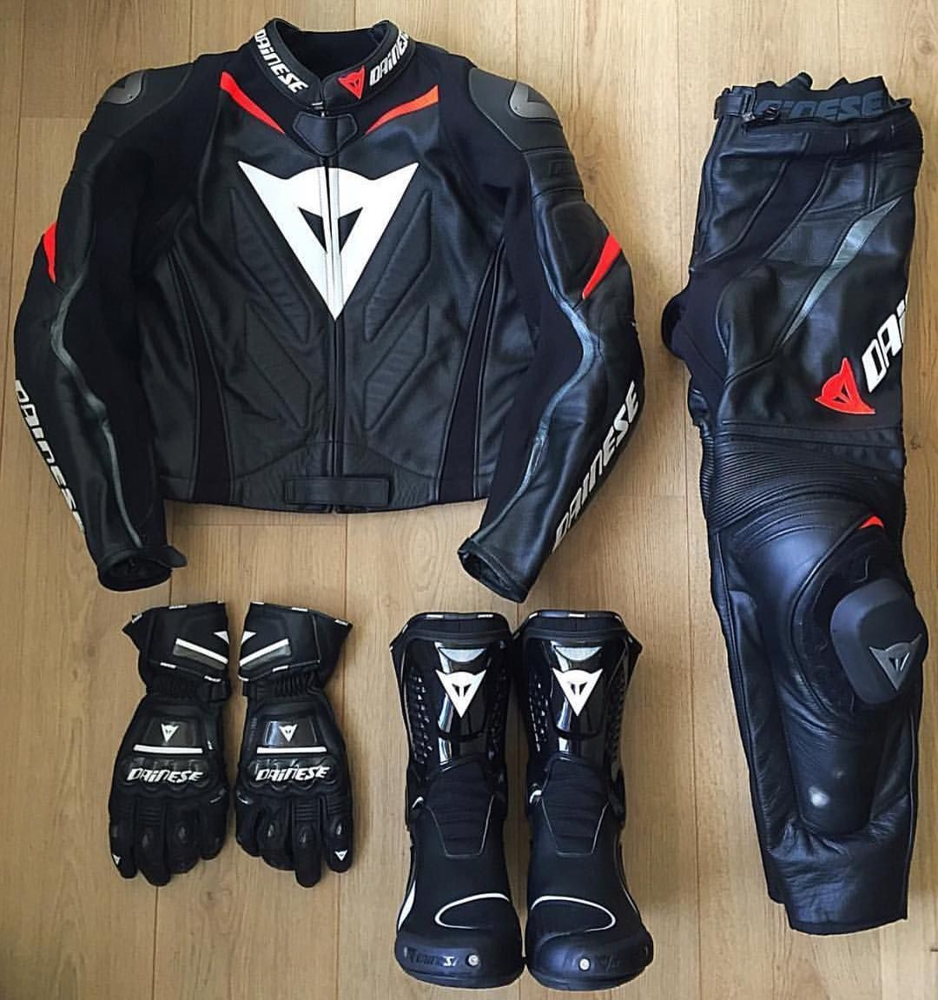
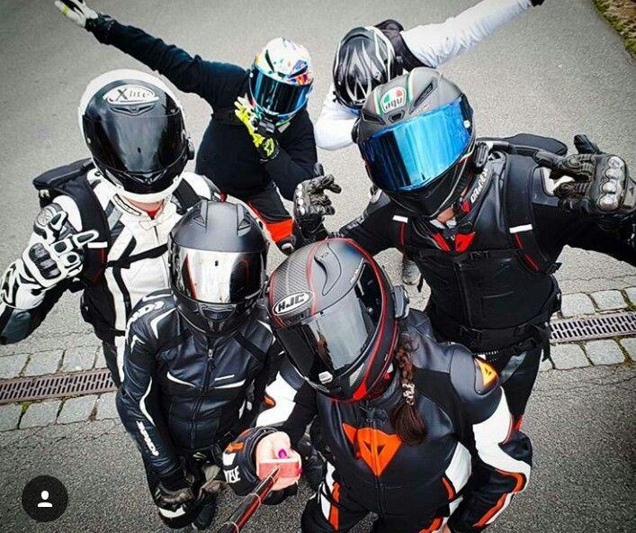

Notre Univers Motoru

M
Histoire
Mission
Valeurs
Équipe
Notre Histoire
Notre association Motoru a été créée en 2026 par un groupe de motards de la région de Khénifra. C'est M. Haddou, directeur de l'association, qui a proposé l'idée face à l'absence de services digitaux dédiés aux motards dans cette région.
Notre Mission
Rassembler les motards passionnés, promouvoir une conduite responsable et développer la culture motocycliste à travers tout le pays.
Nos Valeurs
- Solidarité

Passion
Sécurité
Communauté